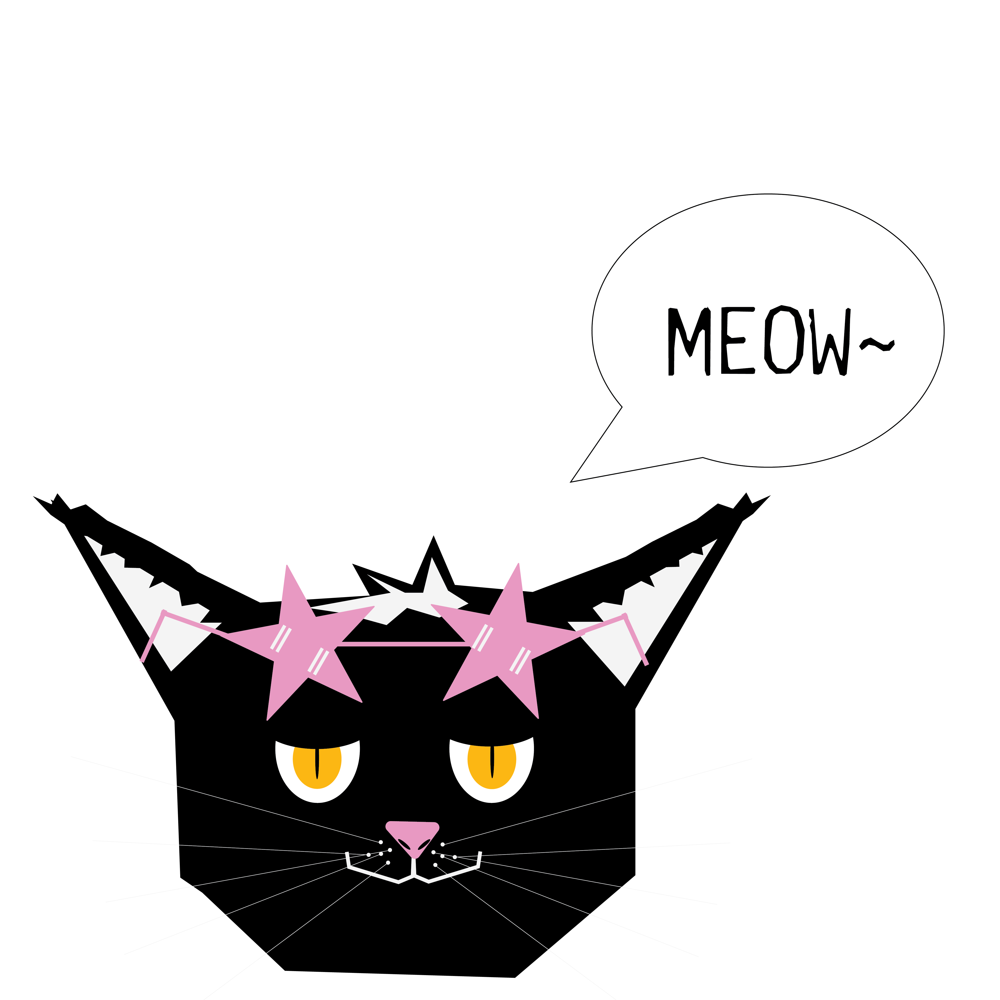

Emily is a junior at San Francisco State University studying Visual Communications with the hope of doing UX/UI work one day. She loves to create and design things that inspire others. Emily describes herself as a very "in touch" person and has been able to use that sense in many different ways. Currently the Chapter President of her sorority, Alpha Gamma Delta, she has been able to use my creativity to help develop and build programs to benefit SFSU's chapter. Previously, she held the position of Vice President Member Experience, and acted as a voice for her sisters while serving on their executive council. During her term, she revamped the retention program that chapter had and as a result increased satisfaction from 47% to 89%. She prides herself on being a very hard worker and is always willing to put in the extra effort to get things done. She is very proud of herself for all of the things that she has accomplished so far in her life and is so excited to see what the future holds for her!
Recently she moved to San Francisco in 2023 and spent her first year in the dorms, following that she moved to Market Street for around a year and a half, and then finally moved to the Outer Richmond for the remainder of her college years. Emily's favorite food spot is Kevin's Noodle House in the Sunset, and of course, what would a meal of pho be without some bomb boba next door at TPumps! Additionally she has two cats consisting of one boy cat who is named....

(Or Mr. Man, ifykyk) and one girl cat, Nelliel (Bleach reference!!!). Art has always appeared throughout Emily's life, ranging in many different formats. She has always been drawn to the arts, whether it was theater, drawing, painting ,animation, singing, or fiber work, she is invested in her own artistic growth and seeing what the world has to offer.
Just to throw this out there, Emily loves the new Gen 10 Pokemon starters and will not accept any hate on their behalf.